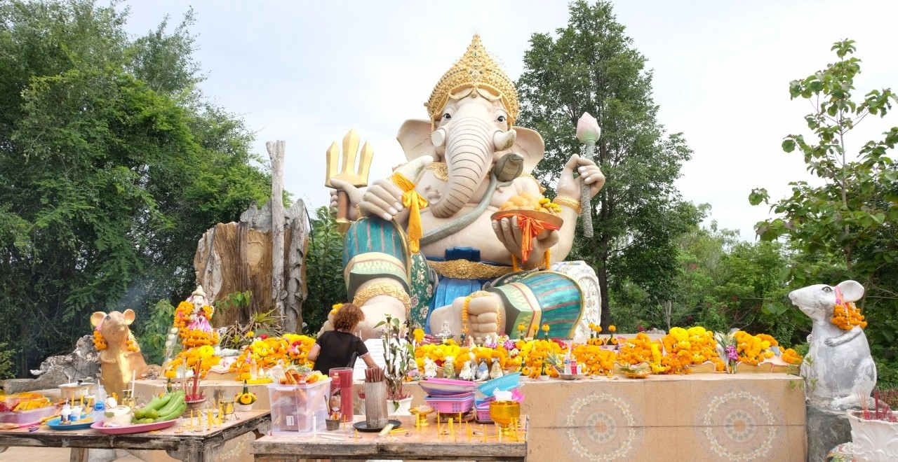
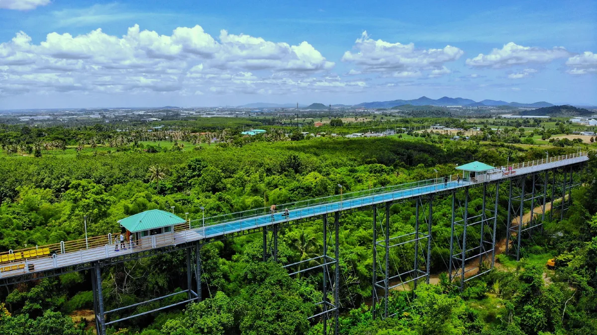
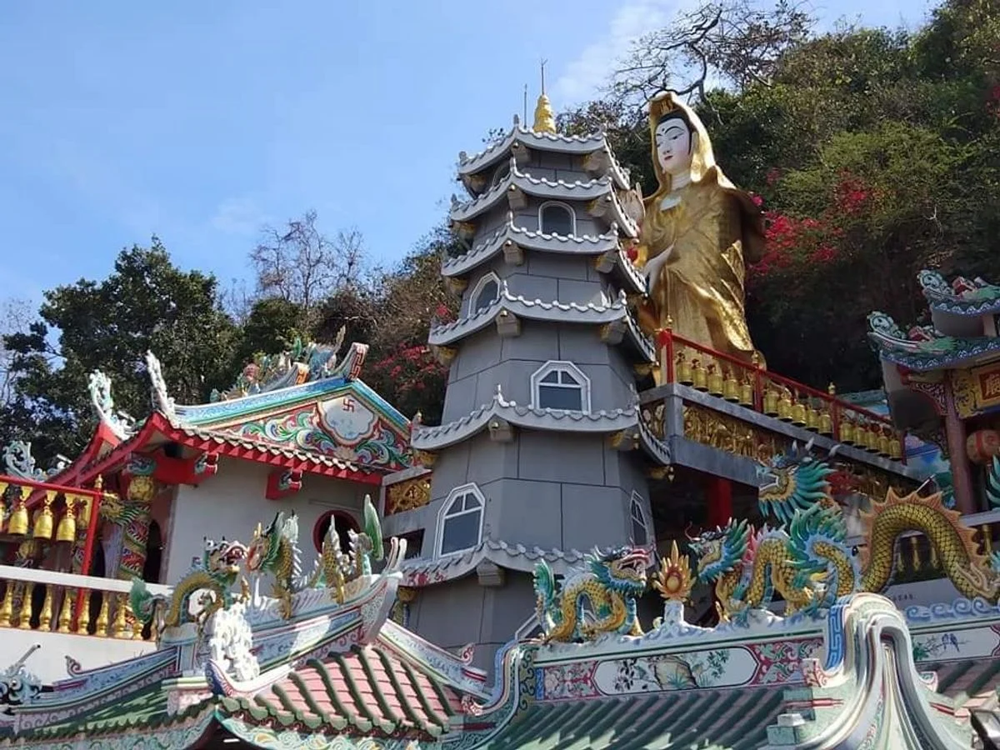
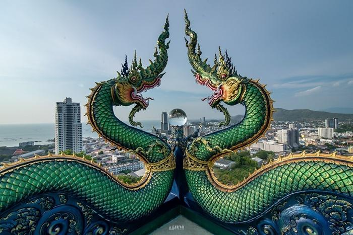
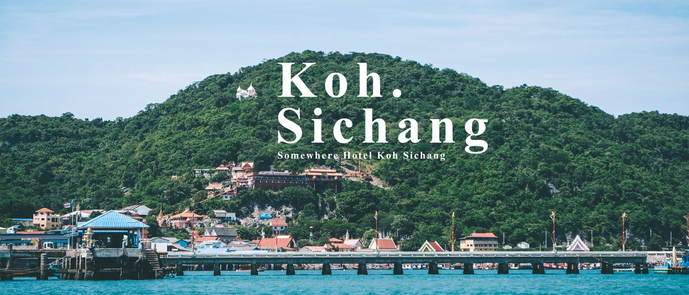
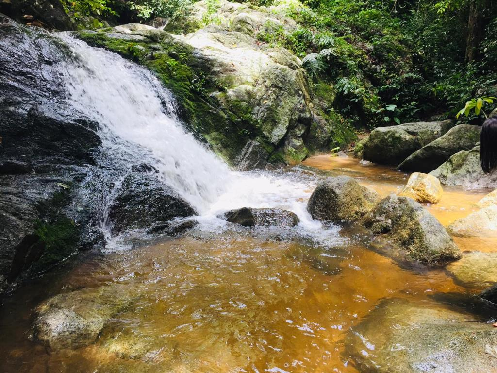
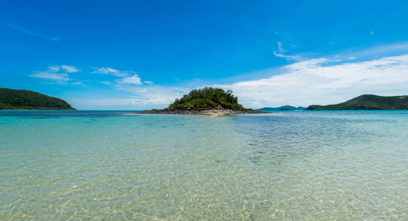
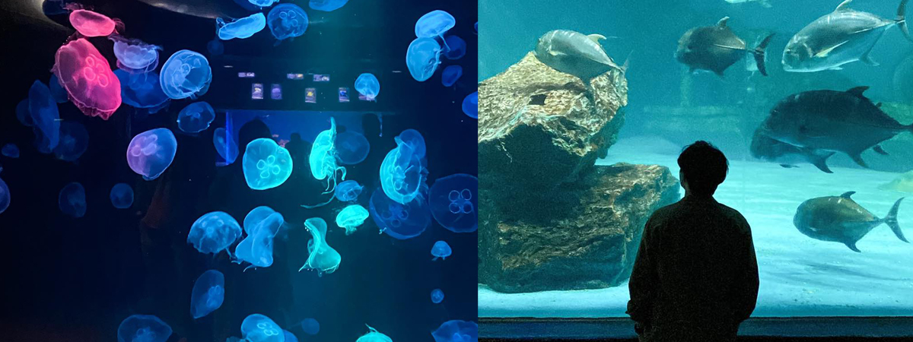
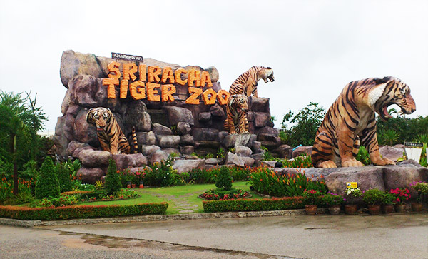
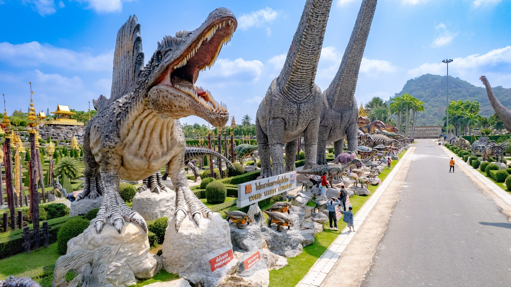

อุทยานพระพิฆเนศร้าง ถูกค้นพบเมื่อ 1 สิงหาคม 2566 โดยผู้ใช้ Tiktok รายหนึ่ง บริเวณรอบๆ อยู่ในสภาพเป็นป่ารกร้าง ทางเข้าเป็นถนนลูกรัง
ตัวอาคารถูกทุบจนเหลือแต่ซากปรักหักพัง มีเพียงแต่องค์พระพิฆเนศ หน้าตักกว้างเกือบ 2 เมตรครึ่ง สูงประมาณ 3-4 เมตร ฐานรองกว้างประมาณ 5 เมตร โดย องค์พระพิฆเนศ ยังคงอยู่ในสภาพสมบูรณ์
อุทยานพระพิฆเนศ
- ที่ตั้ง📍 : หมู่บ้านหนองตะไกร พื้นที่หมู่ 1 ต.ตะเคียนเตี้ย อ.บางละมุง จ.ชลบุรี
- เวลาทำการ⏰ : 24 ชั่วโมง
- แผนที่🗺️ : คลิกเพื่อดูแผนที่

วัดเขาตะแบก ก่อตั้งขึ้นเมื่อวันที่ 18 พฤศจิกายน 2519 ผู้มีจิตศรัทธาในพระพุทธศาสนาจึงได้ถวายที่ดินเพื่อสร้างสำนักสงฆ์ ซึ่งในบริเวณนี้มีต้นตะแบกขึ้นอยู่เป็นจำนวนมาก จึงกลายเป็นที่มาของชื่อวัด ภายในวัดมีกิจกรรมให้ทำหลากหลาย
เดินสกายวอล์กชมวิว ผูกริบบิ้นที่สะพานบุญ ไหว้พระพุทธรูปศิลปะเชียงแสน และ เดินชมธรรมชาติอันร่มรื่น
วัดเขาตะแบก
- ที่ตั้ง📍 : ทางหลวงหมายเลข 331 ตำบลหนองขาม อำเภอศรีราชา จังหวัดชลบุรี
- เวลาทำการ⏰ : 08.00 - 17.00 น.
- แผนที่🗺️ : คลิกเพื่อดูแผนที่

เป็นสถานที่ศักดิ์สิทธิ์ที่ชาวบ้านและนักท่องเที่ยวให้ความเคารพนับถือ สร้างขึ้นเพื่อบูชา "เจ้าแม่สามมุข" ตามตำนานความรักอันเศร้าของหญิงสาวชื่อสามมุขและชายหนุ่มชื่อแสนที่ถูกกีดกันจนต้องสละชีวิตลงบริเวณนี้ ศาลเจ้าแม่สามมุขเป็นสถานที่สำคัญสำหรับการขอพร โดยเฉพาะเรื่องความรักและความสัมพันธ์
นอกจากนี้ยังมีลิงจำนวนมากอาศัยอยู่รอบเขา ทำให้สถานที่นี้เป็นจุดสนใจสำหรับผู้มาเยือน ทั้งด้านศิลปวัฒนธรรมและความเชื่อ
ศาลเจ้าแม่เขาสามมุข
- ที่ตั้ง📍 : ตำบลแสนสุข อำเภอเมือง จังหวัดชลบุรี
- เวลาทำการ⏰ : 06.00-18.00 น.
- แผนที่🗺️ : คลิกเพื่อดูแผนที่

ก่อตั้งขึ้นในปี พ.ศ. 2479 โดยพระครูธรรมธรเที่ยง ซึ่งมาธุดงค์ปักกลดที่นี่ และได้รับการสนับสนุนจากเจ้าจอมหม่อมราชวงศ์สดับ ลดาวัลย์ เพื่อสร้างกุฏิหลังแรกบนเขา ต่อมาพระครูปริยัติวราทร (หลวงพ่อผิว) ได้สืบทอดการพัฒนา สำนักสงฆ์มีพระพุทธลีลานาคะบารมีเป็นพระประธาน และเป็นสถานที่ปฏิบัติธรรมที่เงียบสงบ
พร้อมจุดชมวิวที่งดงามของเมืองศรีราชา เปิดให้เข้าชมทุกวัน เหมาะสำหรับพักผ่อนและปฏิบัติธรรม
สำนักสงฆ์เขาพระครู
- ที่ตั้ง📍 : ตำบลสุรศักดิ์ อำเภอศรีราชา จังหวัดชลบุรี
- เวลาทำการ⏰ : 06.00-18.00 น.
- แผนที่🗺️ : คลิกเพื่อดูแผนที่

เกาะสีชัง ตั้งอยู่ในอ่าวไทย มีความสำคัญทางประวัติศาสตร์ เคยเป็นสถานที่แปรพระราชฐานของพระมหากษัตริย์ไทยถึงสามพระองค์ในสมัยรัตนโกสินทร์ โดยเฉพาะในรัชกาลที่ 5 ที่ได้สร้างพระจุฑาธุชราชฐานเพื่อพักผ่อนพระอิริยาบถ
เกาะสีชังยังเป็นสถานที่ประสูติของสมเด็จพระเจ้าลูกยาเธอ เจ้าฟ้าจุฑาธุชฯ ในปี พ.ศ. 2435 ปัจจุบันเป็นแหล่งท่องเที่ยวที่โดดเด่นด้วยธรรมชาติที่สวยงามและความเงียบสงบ เหมาะสำหรับการพักผ่อน
เกาะสีชัง
- ที่ตั้ง📍 : ห่างจากชายฝั่งอำเภอศรีราชา จังหวัดชลบุรี ประมาณ 12 กิโลเมตร
- เวลาทำการ⏰ : 24 ชั่วโมง
- แผนที่🗺️ : คลิกเพื่อดูแผนที่

เป็นน้ำตกชั้นเดียวที่มีน้ำไหลลงจากหน้าผาสูงประมาณ 5 เมตร ท่ามกลางป่าธรรมชาติอันร่มรื่น ชื่อ "ชันตาเถร" มาจากเรื่องเล่าว่ามีพระภิกษุชราปฏิบัติธรรมในบริเวณนี้ จึงตั้งชื่อเพื่อระลึกถึงท่าน
น้ำตกนี้เหมาะสำหรับการพักผ่อนและชมธรรมชาติ โดยเฉพาะในฤดูฝนที่น้ำจะไหลแรงและงดงามที่สุด
น้ำตกชันตาเถร
- ที่ตั้ง📍 : ตำบลบางพระ อำเภอศรีราชา จังหวัดชลบุรี
- เวลาทำการ⏰ : 08.00-16.00 น.
- แผนที่🗺️ : คลิกเพื่อดูแผนที่

ชายหาดที่มีความสวยงามและน้ำทะเลใสสะอาด ล้อมรอบด้วยธรรมชาติที่สงบเงียบ ชื่อ "เตยงาม" มาจากการที่พื้นที่ชายหาดมีต้นเตยทะเลขึ้นอยู่มากในอดีต
หาดเตยงามเคยเป็นพื้นที่ฝึกซ้อมทางทหาร และปัจจุบันยังอยู่ภายใต้การดูแลของกองทัพเรือ แต่เปิดให้ประชาชนและนักท่องเที่ยวเข้าชมได้ สถานที่แห่งนี้เหมาะสำหรับการพักผ่อน เล่นน้ำทะเล และถ่ายภาพวิวที่งดงาม โดยเฉพาะบริเวณสะพานไม้ที่ยื่นออกไปในทะเล ซึ่งเป็นจุดชมวิวที่ได้รับความนิยมมากที่สุด
หาดเตยงาม
- ที่ตั้ง📍 : หาดเตยงาม อ่าวนาวิกโยธิน หน่วยบัญชาการนาวิกโยธิน อำเภอสัตหีบ จังหวัดชลบุรี
- เวลาทำการ⏰ : 06.00-18.00 น.
- แผนที่🗺️ : คลิกเพื่อดูแผนที่

อ่างเก็บน้ำบางพระ
- ที่ตั้ง📍 : สำนักชลประทานที่ 9 ต.บางพระ อ.ศรีราชา จ.ชลบุรี
- เวลาทำการ⏰ : 05:00 - 18:00 น.
- แผนที่🗺️ : คลิกเพื่อดูแผนที่

อควาเรียมบางแสน หรือ สถานแสดงพันธุ์สัตว์น้ำ มหาวิทยาลัยบูรพา ตั้งอยู่ในมหาวิทยาลัยบูรพา อำเภอเมืองชลบุรี เปิดทำการตั้งแต่ปี พ.ศ. 2527 เพื่อเป็นแหล่งศึกษาและเผยแพร่ความรู้เกี่ยวกับสัตว์น้ำทั้งน้ำจืดและน้ำเค็ม รวมถึงการอนุรักษ์ทรัพยากรทางทะเล ภายในอควาเรียมมีการจัดแสดงพันธุ์สัตว์น้ำต่างๆ เช่น ปลาหายากและสัตว์ทะเลที่มีความสำคัญต่อระบบนิเวศ ช่วยส่งเสริมการศึกษาและการอนุรักษ์สิ่งแวดล้อมทางทะเล
อควาเรียมบางแสน
- ที่ตั้ง📍 : 169 ถนนลงหาดบางแสน ตำบลแสนสุข อำเภอบางแสน จังหวัดชลบุรี
- เวลาทำการ⏰ : 9.00-16.00 น.
- แผนที่🗺️ : คลิกเพื่อดูแผนที่

เป็นสถานที่ที่รวบรวมและอนุรักษ์เสือและสัตว์ป่าหายากอื่นๆ ภายในสวนเสือมีการแสดงโชว์เสือและสัตว์ต่างๆ ที่สามารถเรียนรู้เกี่ยวกับพฤติกรรมของสัตว์เหล่านี้ รวมถึงการอนุรักษ์เสือในธรรมชาติ
สวนเสือศรีราชาเป็นหนึ่งในสถานที่ท่องเที่ยวที่มีชื่อเสียงในจังหวัดชลบุรี มีการให้บริการทั้งการดูโชว์สัตว์และการเข้าร่วมกิจกรรมที่เกี่ยวข้องกับสัตว์ป่า เช่น การถ่ายรูปกับเสือและสัตว์ป่าอื่นๆ ช่วยสร้างความสนุกสนานและการเรียนรู้สำหรับนักท่องเที่ยว
สวนเสือ
- ที่ตั้ง📍 : เลขที่ 341 หมู่ 3 กม. 20 ทางหลวงสาย 7 (ชลบุรี-พัทยาสายใหม่) ตำบลหนองขาม อำเภอศรีราชา
- เวลาทำการ⏰ : 08.00-18.00 น.
- แผนที่🗺️ : คลิกเพื่อดูแผนที่

เป็นสวนที่มีชื่อเสียงในด้านการจัดแสดงไดโนเสาร์ โดยมีการจำลองรูปแบบของโลกในยุคดึกดำบรรพ์ รวมถึงโมเดลไดโนเสาร์ขนาดใหญ่และสัตว์จากยุคครีเทเชียส นอกจากนี้ยังมีสวนพฤกษศาสตร์ที่หลากหลายและสิ่งมีชีวิตจากยุคก่อนประวัติศาสตร์ สวนแห่งนี้เปิดให้บริการเป็นสถานที่ท่องเที่ยวและเรียนรู้เกี่ยวกับไดโนเสาร์และสิ่งมีชีวิตในยุคนั้น
สวนนงนุช
- 34/1 7 หมู่ 7 ตำบลนาจอมเทียน อำเภอสัตหีบ จังหวัดชลบุรี
- เวลาทำการ⏰ : 08.00-18.00 น.
- แผนที่🗺️ : คลิกเพื่อดูแผนที่